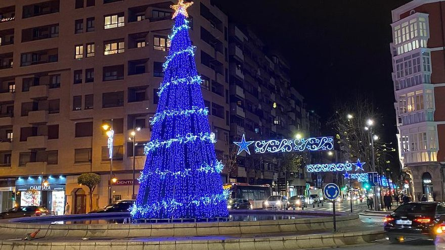
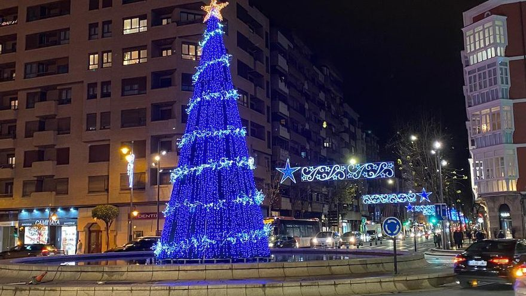

Información.
Esta Navidad, la ciudad de Logroño se llena de ilusión con una mágica exhibición de renos pensada especialmente para los más pequeños. Los niños podrán disfrutar de una experiencia única acercándose a estos entrañables animales en un entorno decorado con espíritu navideño. Además de contemplarlos de cerca, el evento ofrece la posibilidad de montar en renos de forma segura, permitiendo que varios niños participen juntos en cada recorrido, fomentando la diversión en grupo y compartiendo momentos inolvidables. La actividad está diseñada para que los más pequeños vivan la Navidad de una manera diferente, rodeados de fantasía, luces y sonrisas. Familias y niños podrán disfrutar de un ambiente cálido y festivo, donde la imaginación cobra vida y la tradición navideña se convierte en una experiencia interactiva. Esta exhibición de renos en Logroño es una propuesta ideal para crear recuerdos especiales, disfrutar en familia y dejarse llevar por la magia de la Navidad en un evento pensado para todos los públicos, especialmente para los niños.
Uno de los principales atractivos del evento es la posibilidad de montar en renos, una actividad pensada especialmente para los niños dentro de un rango de edad determinado y diseñada para que vivan una experiencia única y llena de fantasía. Los paseos se realizan en grupos de varios niños que cumplan las condiciones físicas básicas necesarias, lo que permite compartir la experiencia con amigos o hermanos, fomentando la convivencia, la diversión colectiva y la emoción del momento. Durante el recorrido, los pequeños que cuenten con la capacidad física adecuada podrán disfrutar del entorno navideño y sentirse parte de una aventura especial. Todo el trayecto está supervisado en todo momento por personal especializado y cualificado, que se encarga de garantizar la seguridad y el bienestar de los participantes, verificando previamente la edad y aptitud física requeridas, ofreciendo a las familias la tranquilidad necesaria para que los niños disfruten de la actividad con total confianza.
Este evento navideño está enfocado principalmente al público infantil, ofreciendo una alternativa de ocio original, divertida y memorable durante las fechas más especiales del año, pensada para estimular la imaginación y la ilusión de los más pequeños. Las familias podrán disfrutar de un plan diferente en Logroño, ideal para crear recuerdos inolvidables, hacer fotografías en un entorno cuidadosamente decorado y vivir momentos llenos de alegría, emoción y complicidad. La exhibición de renos se presenta como una actividad perfecta para complementar las celebraciones navideñas, invitando a grandes y pequeños a compartir sonrisas, ilusión y la magia propia de estas fechas tan señaladas, en un ambiente familiar que refuerza los valores de la Navidad y el disfrute conjunto.
El espacio del evento contará además con zonas habilitadas para el descanso y la observación, donde padres y acompañantes podrán disfrutar tranquilamente del ambiente navideño, la decoración y la música propia de estas fechas mientras los niños participan en las actividades. Estos espacios están pensados para ofrecer comodidad y una buena visibilidad, permitiendo a las familias relajarse y compartir el momento sin perder detalle de la experiencia. La organización ha cuidado cada aspecto del evento para ofrecer una experiencia accesible, cómoda y pensada para toda la familia, prestando especial atención a la seguridad, el bienestar y la ambientación, convirtiendo esta exhibición de renos en una cita imprescindible de la Navidad en Logroño y en un plan ideal para disfrutar juntos de la magia de estas fechas.
 
